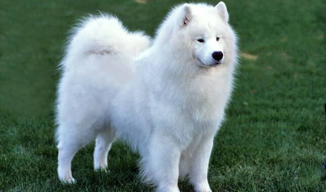
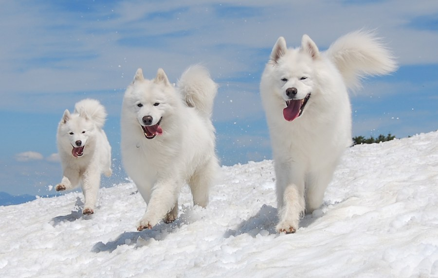
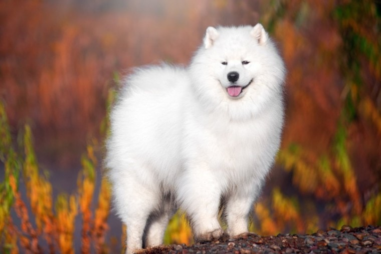

Samoyed
The Samoyed combines strength, agility, dignity, and grace in a general spitz outline. Slightly longer than they are tall, they are nonetheless compact. They have a strong, muscular body that is able to combine power, speed, agility, and endurance. They have a quick, agile stride with good reach and drive.
Their double coat is heavy and weather resistant. Their undercoat is soft and thick, whereas the outer coat is straight and harsh, standing straight out from their body, and glistening with a silver sheen. Their expression is often animated, with the characteristic “Samoyed smile” created by the upcurved corners of their mouth.
History
Samoyed, also known by the nicknames Sammy and Smiley, belongs to the Spitz family and group of Working Dogs. Samoyed is one of the oldest dog breeds. It was created thousands of years ago by indigenous people of Siberia called Samoyeds.
Samoyed was used to pull the sleds, herd the reindeer, keep its owners warm during the night and to facilitate hunting. Despite its long history, Samoyed was brought to Europe and America a little more than 100 years ago. This beautiful, fluffy dog is mostly kept as a house pet and as a show dog today.
Personality
The Samoyed is a friendly, personable dog. These are intelligent dogs, with a touch of independence. Bred to live in a tent in very close quarters with their families, they thrive on human company. Samoyeds will alarm bark and, if left alone for long periods of time, will often develop into nuisance barkers. Digging can be a problem because they dig to reach a cool resting place.

Samoyeds tend to get along well with other dogs as well as people and with other pets they are raised with. They are herding dogs and may show some tendency to chase or nip. In general, they get along well with children, although they can be a little boisterous for small toddlers.